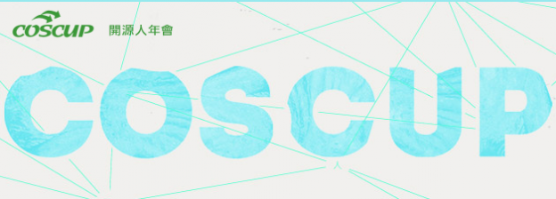
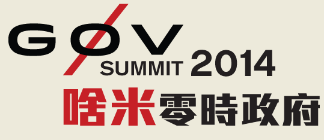
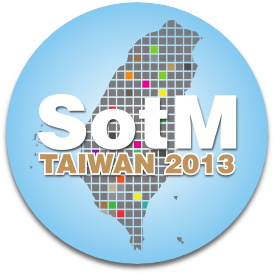

舉辦主題為開放文化的講座，本基金會亦接受委託，協辦相關活動。

COSCUP 開源人年會
COSCUP 希望藉由每一屆的年度會議，讓世界各地的 FLOSS 愛好者齊聚一堂，並邀請世界各地的專家上台分享經驗，想法與新的技術，來共同的激發國內外的愛好者更加踴躍投入 FLOSS 的開發與使用。

PyCon APAC
PyCon APAC 是由 Python 社群自發性為了亞太地區 Python 愛好者所舉辦的研討會。PyCon APAC 現在每年舉辦一次，歡迎每一位 Python 使用者參加。PyCon 最初是在 2003 年於北美開始舉辦，而如今全世界都有遵照 PyCon 精神所舉行的會議。

g0v Summit
g0v.tw 2012年底 g0v 社群運作逐漸成形，從那時起 g0v 零時政府社群便以數位世代的思維，以開源方式號召群眾參與著手開發新工具、新組織型態、新合作關係。經過多方共同努力，透過 g0v 的開放特性作為平台，與 NGO 和政府建立了多方互動，但需要更長遠的跨領域交流，為此籌辦 g0v.tw summit 零時政府高峰會，希望有更多深入的溝通與交流，與有志運用科技改變社會的各界共同參與，期待開放力量成為實際改變的動能。

SITCON 學生計算機年會
由一群對資訊抱持熱誠的學生們所組成的同名社群，自發籌辦年會與夏令營活動，希望能透過技術與知識的激盪，給予學生們一個用自身力量實踐夢想的舞台。
行動科技應用開發者年會 MOPCON
MOPCON 專注於行動軟體開發 / 應用技術之專業研討會，也是南部最大社群研討會，希望藉由軟體技術社群的力量，推動南北業界技術實務經驗交流，關注行動應用趨勢，並以軟體科技從業人員出發。
JCConf
Java Community Conference Taiwan 是由社群主辦的 Java 開發者年會，以提供更多機會讓開發人員之間能夠互相交流。

SotM TW 台灣開放街圖研討會
台灣開放街圖研討會 (State of the Map Taiwan) 是台灣開放街圖社群 (OpenStreetMap Taiwan) 年度會議，目的在於提供一個開放街圖使用和開發的相互討論環境，以及開放地理資料、地理資訊開放源碼和空間視覺化之交流，而促進地理空間資訊的技術發展、創新研發、和商業應用有深入淺出的討論與互動。